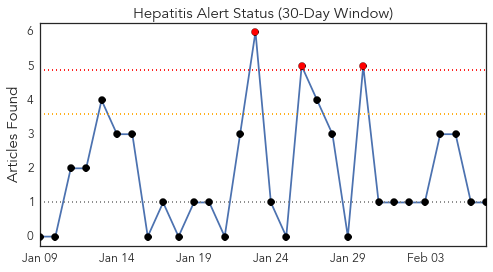
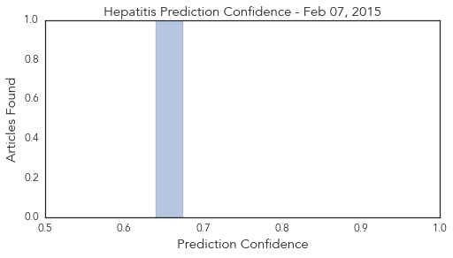

Meningitis
30-Day Web Trend
0 alerts, 0 warnings

30-Day Twitter Trend
0 alerts, 0 warnings

Article Locations

Article Confidences

Top Articles:
- 0.942
- Yale student hospitalized with probable bacterial meningitis
- 0.909
- Vaccination clinic planned at PC after meningitis cases
- 0.905
- Health officials say 2d college student might have meningitis
- 0.748
- Meningitis vaccine to be offered to college students
- 0.636
- UC puts wider vaccination requirements for 2017 admissions
Top Tweets:
-
No tweets found for Feb 07, 2015
Hepatitis
30-Day Web Trend
3 alerts, 0 warnings

30-Day Twitter Trend
0 alerts, 0 warnings

Article Locations
Article Confidences
Top Articles:
Top Tweets:
-
No tweets found for Feb 07, 2015